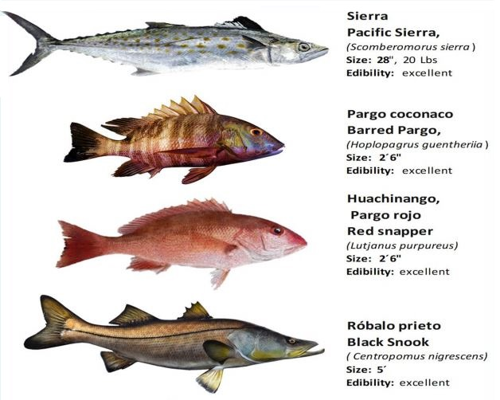

en la zona de teconapa se encuentran los diferentes tipos de peces de peces
- pez dorado: El pez dorado, también conocido como mahi-mahi o dorado, es un pez de colores brillantes que se caracteriza por su piel dorada, azul y verde. Tiene una cabeza grande y un cuerpo alargado. Los machos a menudo tienen una frente prominente.
- Pargo: Los pargos son peces de la familia Lutjanidae y se caracterizan por su cuerpo alargado y robusto. Vienen en una variedad de colores, pero a menudo son rojos o rosados. Tienen aletas dorsales y anales puntiagudas y a menudo tienen una línea oscura a lo largo de su línea lateral.
- huachinango: El huachinango es un tipo de pargo rojo o carmesí que se caracteriza por su color rojo intenso. Tiene un cuerpo robusto y una boca grande. Los huachinangos son apreciados por su carne sabrosa y textura firme.
>